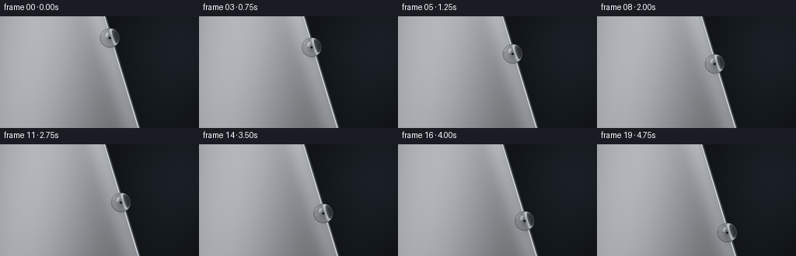
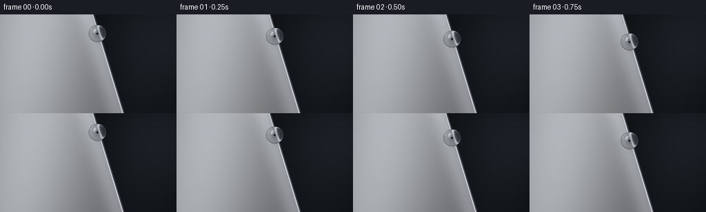

CODING AGENTS AS PIXEL WORLD MODELS
traex/GPT-6.1-Sol · mechanics_0056
点击播放 · 原生 RGB 像素
逐轮保存的候选
回放视频、检查图与代码变化。
每份候选均可单独播放。实际图片检查记录在下方工具轨迹中。
候选 01播放与检查图
点击播放 · 原生 RGB 像素


展开代码变化
--- 上一保存版本
+++ 本次保存版本
@@ -0,0 +1,158 @@
+"""Procedural macro photograph: a water bead descending an aluminum edge.
+Analytic sphere optics, a studio lighting environment, and supersampled RGB output.
+Only numpy and Pillow are used for image synthesis.
+"""
+from pathlib import Path
+import json
+import numpy as np
+from PIL import Image
+from artifact_io import save
+
+ROOT = Path(__file__).resolve().parent
+SPEC = json.loads((ROOT / 'task_spec.json').read_text())
+W, H = SPEC['width'], SPEC['height']
+S = 4
+x, y = np.meshgrid((np.arange(W*S)+.5)/S, (np.arange(H*S)+.5)/S)
+
+
+def smoothstep(a, b, z):
+ t = np.clip((z-a)/(b-a), 0, 1)
+ return t*t*(3-2*t)
+
+
+def edge(y):
+ return 135.0 + .305*y
+
+
+def backdrop(x, y):
+ # Very out-of-focus studio background, deliberately without sharp objects.
+ glow = np.exp(-((x-233)/91)**2 - ((y-34)/84)**2)
+ glow2 = np.exp(-((x-205)/57)**2 - ((y-148)/78)**2)
+ v = .056 + .071*glow + .027*glow2
+ return np.stack([v*.77, v*.96, v*1.12], axis=-1)
+
+
+def metal(x, y, cx, cy):
+ d = edge(y)-x
+ # Broad soft studio reflection on a smooth, cool silver face.
+ base = (.46 + .28*np.exp(-((x+.17*y-47)/91)**2)
+ + .135*np.exp(-((d-7)/16)**2)
+ - .043*y/H)
+ # Barely visible directional polish. No frame-dependent noise.
+ fine = (np.sin(y*31.7+x*.38)+.5*np.sin(y*73.8+x*.13)
+ +.25*np.sin(y*137.8+x*.57))*.0013
+ grain = .0018*np.sin(x*2.6+y*11.1)*np.sin(x*4.7-y*7.4)
+ base = base + fine + grain
+ col = np.stack([base*.973, base*.992, base*1.021], -1)
+ # Thin rolled/polished rim and visible narrow edge thickness.
+ rim = .74 + .20*np.exp(-((d-.75)/.42)**2)
+ rim -= .14*smoothstep(.9,2.3,d)
+ side = .23 + .13*np.exp(-((d+.25)/.7)**2)
+ edgecol = np.where((d>=0)[...,None], np.stack([rim*.96,rim*.99,rim*1.02],-1),
+ np.stack([side*.91,side*.97,side*1.05],-1))
+ mix = 1-smoothstep(1.75,2.55,d)
+ col = col*(1-mix[...,None])+edgecol*mix[...,None]
+ # Faint contact shadow, and the focused glimmer cast by the transparent bead.
+ shadow = .16*np.exp(-((x-cx-1.8)/8.0)**2-((y-cy-4.0)/9.2)**2)
+ contact = .19*np.exp(-((x-cx)/2.1)**2-((y-cy)/2.7)**2)
+ col *= (1-shadow-contact)[...,None]
+ caustic = .13*np.exp(-((x-cx+3.8)/4.0)**2-((y-cy-9.1)/2.9)**2)
+ col += caustic[...,None]*np.array([.98,.99,1.])
+ return col
+
+
+def scene(origin, direction, cx, cy):
+ dz = direction[...,2]
+ t = -origin[...,2]/np.where(abs(dz)>1e-8,dz,-1e-8)
+ hitx = origin[...,0]+t*direction[...,0]
+ hity = origin[...,1]+t*direction[...,1]
+ d = edge(hity)-hitx
+ tb = (-95-origin[...,2])/np.where(abs(dz)>1e-8,dz,-1e-8)
+ bx = origin[...,0]+tb*direction[...,0]
+ by = origin[...,1]+tb*direction[...,1]
+ bg = backdrop(bx,by)
+ face = metal(hitx,hity,cx,cy)
+ coverage = smoothstep(-2.15,-1.8,d)*((t>=0)&(dz<0))
+ return face*coverage[...,None]+bg*(1-coverage[...,None])
+
+
+def environment(d):
+ # Reflections of two large studio softboxes, plus a dark camera flag.
+ dx,dy,dz=d[...,0],d[...,1],d[...,2]
+ base=.075+.10*smoothstep(-.6,.85,-dy)
+ env=np.stack([base*.91,base*.98,base*1.07],-1)
+ # Use an angular tangent-plane rectangle for a believable window reflection.
+ center=np.array([-.53,-.60,.60]); center/=np.linalg.norm(center)
+ u=np.array([center[2],0,-center[0]]);u/=np.linalg.norm(u)
+ v=np.cross(center,u)
+ denom=np.sum(d*center,axis=-1)
+ ru=np.sum(d*u,axis=-1)/np.maximum(denom,.001)
+ rv=np.sum(d*v,axis=-1)/np.maximum(denom,.001)
+ rect=(1-smoothstep(.25,.32,np.abs(ru)))*(1-smoothstep(.42,.51,np.abs(rv)))*smoothstep(.1,.2,denom)
+ env+=rect[...,None]*np.array([8.8,9.0,9.2])
+ # A narrow strip on the right makes the round boundary easy to read.
+ center2=np.array([.88,.01,.47]);center2/=np.linalg.norm(center2)
+ u2=np.array([center2[2],0,-center2[0]])
+ den2=np.sum(d*center2,axis=-1)
+ a2=np.sum(d*u2,axis=-1)/np.maximum(den2,.001)
+ b2=dy/np.maximum(den2,.001)
+ strip=(1-smoothstep(.052,.083,np.abs(a2)))*(1-smoothstep(.61,.8,np.abs(b2)))*smoothstep(.1,.2,den2)
+ env+=strip[...,None]*np.array([2.9,3.1,3.3])
+ return env
+
+
+def render(frame):
+ t=frame/(SPEC['frames']-1)
+ # Continuous gravity-driven glide, with a constant radius throughout.
+ cy=28.0+86.0*(.87*t+.13*t*t)
+ cx=edge(cy)-2.4
+ radius=12.6
+ center=np.array([cx,cy,12.58])
+ origin=np.stack([x,y,np.full_like(x,75.)],-1)
+ incident=np.zeros_like(origin);incident[...,2]=-1.
+ image=scene(origin,incident,cx,cy)
+ qx=x-cx;qy=y-cy
+ r2=qx*qx+qy*qy
+ inside=r2<radius*radius
+ # Restrict optical calculations to the droplet's pixels.
+ a=qx[inside];b=qy[inside]
+ nz=np.sqrt(np.maximum(0,1-(a*a+b*b)/radius**2))
+ n=np.stack([a/radius,b/radius,nz],-1)
+ p=center+radius*n
+ I=np.zeros_like(n);I[:,2]=-1
+ eta=1/1.333
+ cost=np.sqrt(1-eta*eta*(1-nz*nz))
+ tr=eta*I+(eta*nz-cost)[:,None]*n
+ travel=-2*np.sum((p-center)*tr,axis=-1)
+ exitp=p+travel[:,None]*tr
+ outn=(exitp-center)/radius
+ outcos=np.sum(tr*outn,axis=-1)
+ outcost=np.sqrt(np.maximum(0,1-1.333**2*(1-outcos*outcos)))
+ transmitted=1.333*tr-(1.333*outcos-outcost)[:,None]*outn
+ refracted=scene(exitp,transmitted,cx,cy)
+ refl=I+2*nz[:,None]*n
+ reflection=environment(refl)
+ # Exact unpolarized Fresnel reflectance for air/water.
+ rs=((nz-1.333*cost)/(nz+1.333*cost))**2
+ rp=((1.333*nz-cost)/(1.333*nz+cost))**2
+ fresnel=(rs+rp)*.5
+ absorption=np.exp(-travel[:,None]*np.array([.0007,.0003,.00016]))
+ water=(1-fresnel[:,None])*refracted*absorption+fresnel[:,None]*reflection
+ # Subtle second-interface reflection rather than an opaque shaded ball.
+ water+=.008*environment(-transmitted)*(1-fresnel[:,None])
+ image[inside]=water
+ # Gentle optical vignette and saturation-free studio exposure.
+ vignette=1-.055*((x-W*.52)/(W*.72))**2-.035*((y-H*.52)/(H*.8))**2
+ image*=vignette[...,None]
+ image=np.clip(image,0,1)
+ rgb=(image*255+.5).astype(np.uint8)
+ return np.array(Image.fromarray(rgb).resize((W,H),Image.Resampling.LANCZOS))
+
+
+def main():
+ frames=np.stack([render(i) for i in range(SPEC['frames'])])
+ save(frames,ROOT)
+ print(f'Saved {len(frames)} RGB frames, {W}x{H}, at {SPEC["fps"]} fps')
+
+if __name__=='__main__':
+ main()
可观测工具轨迹
实际执行的命令与返回图片。
命令 1exit 0
/bin/bash -lc 'ls -la && cat prompt.txt && cat GENERATION_RULES.md && cat task_spec.json'
命令 2exit 0
/bin/bash -lc "cat artifact_io.py && python - <<'PY'
import numpy, PIL
print('numpy/PIL available')
PY"命令 3exit 0
/bin/bash -lc "cat > generate.py <<'PY'
\"\"\"Procedural macro photograph: a water bead descending an aluminum edge.
Analytic sphere optics, a studio lighting environment, and supersampled RGB output.
Only numpy and Pillow are used for image synthesis.
\"\"\"
from pathlib import Path
import json
import numpy as np
from PIL import Image
from artifact_io import save
ROOT = Path(__file__).resolve().parent
SPEC = json.loads((ROOT / 'task_spec.json').read_text())
W, H = SPEC['width'], SPEC['height']
S = 4
x, y = np.meshgrid((np.arange(W*S)+.5)/S, (np.arange(H*S)+.5)/S)
def smoothstep(a, b, z):
t = np.clip((z-a)/(b-a), 0, 1)
return t*t*(3-2*t)
def edge(y):
return 135.0 + .305*y
def backdrop(x, y):
# Very out-of-focus studio background, deliberately without sharp objects.
glow = np.exp(-((x-233)/91)**2 - ((y-34)/84)**2)
glow2 = np.exp(-((x-205)/57)**2 - ((y-148)/78)**2)
v = .056 + .071*glow + .027*glow2
return np.stack([v*.77, v*.96, v*1.12], axis=-1)
def metal(x, y, cx, cy):
d = edge(y)-x
# Broad soft studio reflection on a smooth, cool silver face.
base = (.46 + .28*np.exp(-((x+.17*y-47)/91)**2)
+ .135*np.exp(-((d-7)/16)**2)
- .043*y/H)
# Barely visible directional polish. No frame-dependent noise.
fine = (np.sin(y*31.7+x*.38)+.5*np.sin(y*73.8+x*.13)
+.25*np.sin(y*137.8+x*.57))*.0013
grain = .0018*np.sin(x*2.6+y*11.1)*np.sin(x*4.7-y*7.4)
base = base + fine + grain
col = np.stack([base*.973, base*.992, base*1.021], -1)
# Thin rolled/polished rim and visible narrow edge thickness.
rim = .74 + .20*np.exp(-((d-.75)/.42)**2)
rim -= .14*smoothstep(.9,2.3,d)
side = .23 + .13*np.exp(-((d+.25)/.7)**2)
edgecol = np.where((d>=0)[...,None], np.stack([rim*.96,rim*.99,rim*1.02],-1),
np.stack([side*.91,side*.97,side*1.05],-1))
mix = 1-smoothstep(1.75,2.55,d)
col = col*(1-mix[...,None])+edgecol*mix[...,None]
# Faint contact shadow, and the focused glimmer cast by the transparent bead.
shadow = .16*np.exp(-((x-cx-1.8)/8.0)**2-((y-cy-4.0)/9.2)**2)
contact = .19*np.exp(-((x-cx)/2.1)**2-((y-cy)/2.7)**2)
col *= (1-shadow-contact)[...,None]
caustic = .13*np.exp(-((x-cx+3.8)/4.0)**2-((y-cy-9.1)/2.9)**2)
col += caustic[...,None]*np.array([.98,.99,1.])
return col
def scene(origin, direction, cx, cy):
dz = direction[...,2]
t = -origin[...,2]/np.where(abs(dz)>1e-8,dz,-1e-8)
hitx = origin[...,0]+t*direction[...,0]
hity = origin[...,1]+t*direction[...,1]
d = edge(hity)-hitx
tb = (-95-origin[...,2])/np.where(abs(dz)>1e-8,dz,-1e-8)
bx = origin[...,0]+tb*direction[...,0]
by = origin[...,1]+tb*direction[...,1]
bg = backdrop(bx,by)
face = metal(hitx,hity,cx,cy)
coverage = smoothstep(-2.15,-1.8,d)*((t>=0)&(dz<0))
return face*coverage[...,None]+bg*(1-coverage[...,None])
def environment(d):
# Reflections of two large studio softboxes, plus a dark camera flag.
dx,dy,dz=d[...,0],d[...,1],d[...,2]
base=.075+.10*smoothstep(-.6,.85,-dy)
env=np.stack([base*.91,base*.98,base*1.07],-1)
# Use an angular tangent-plane rectangle for a believable window reflection.
center=np.array([-.53,-.60,.60]); center/=np.linalg.norm(center)
u=np.array([center[2],0,-center[0]]);u/=np.linalg.norm(u)
v=np.cross(center,u)
denom=np.sum(d*center,axis=-1)
ru=np.sum(d*u,axis=-1)/np.maximum(denom,.001)
rv=np.sum(d*v,axis=-1)/np.maximum(denom,.001)
rect=(1-smoothstep(.25,.32,np.abs(ru)))*(1-smoothstep(.42,.51,np.abs(rv)))*smoothstep(.1,.2,denom)
env+=rect[...,None]*np.array([8.8,9.0,9.2])
# A narrow strip on the right makes the round boundary easy to read.
center2=np.array([.88,.01,.47]);center2/=np.linalg.norm(center2)
u2=np.array([center2[2],0,-center2[0]])
den2=np.sum(d*center2,axis=-1)
a2=np.sum(d*u2,axis=-1)/np.maximum(den2,.001)
b2=dy/np.maximum(den2,.001)
strip=(1-smoothstep(.052,.083,np.abs(a2)))*(1-smoothstep(.61,.8,np.abs(b2)))*smoothstep(.1,.2,den2)
env+=strip[...,None]*np.array([2.9,3.1,3.3])
return env
def render(frame):
t=frame/(SPEC['frames']-1)
# Continuous gravity-driven glide, with a constant radius throughout.
cy=28.0+86.0*(.87*t+.13*t*t)
cx=edge(cy)-2.4
radius=12.6
center=np.array([cx,cy,12.58])
origin=np.stack([x,y,np.full_like(x,75.)],-1)
incident=np.zeros_like(origin);incident[...,2]=-1.
image=scene(origin,incident,cx,cy)
qx=x-cx;qy=y-cy
r2=qx*qx+qy*qy
inside=r2<radius*radius
# Restrict optical calculations to the droplet's pixels.
a=qx[inside];b=qy[inside]
nz=np.sqrt(np.maximum(0,1-(a*a+b*b)/radius**2))
n=np.stack([a/radius,b/radius,nz],-1)
p=center+radius*n
I=np.zeros_like(n);I[:,2]=-1
eta=1/1.333
cost=np.sqrt(1-eta*eta*(1-nz*nz))
tr=eta*I+(eta*nz-cost)[:,None]*n
travel=-2*np.sum((p-center)*tr,axis=-1)
exitp=p+travel[:,None]*tr
outn=(exitp-center)/radius
outcos=np.sum(tr*outn,axis=-1)
outcost=np.sqrt(np.maximum(0,1-1.333**2*(1-outcos*outcos)))
transmitted=1.333*tr-(1.333*outcos-outcost)[:,None]*outn
refracted=scene(exitp,transmitted,cx,cy)
refl=I+2*nz[:,None]*n
reflection=environment(refl)
# Exact unpolarized Fresnel reflectance for air/water.
rs=((nz-1.333*cost)/(nz+1.333*cost))**2
rp=((1.333*nz-cost)/(1.333*nz+cost))**2
fresnel=(rs+rp)*.5
absorption=np.exp(-travel[:,None]*np.array([.0007,.0003,.00016]))
water=(1-fresnel[:,None])*refracted*absorption+fresnel[:,None]*reflection
# Subtle second-interface reflection rather than an opaque shaded ball.
water+=.008*environment(-transmitted)*(1-fresnel[:,None])
image[inside]=water
# Gentle optical vignette and saturation-free studio exposure.
vignette=1-.055*((x-W*.52)/(W*.72))**2-.035*((y-H*.52)/(H*.8))**2
image*=vignette[...,None]
image=np.clip(image,0,1)
rgb=(image*255+.5).astype(np.uint8)
return np.array(Image.fromarray(rgb).resize((W,H),Image.Resampling.LANCZOS))
def main():
frames=np.stack([render(i) for i in range(SPEC['frames'])])
save(frames,ROOT)
print(f'Saved {len(frames)} RGB frames, {W}x{H}, at {SPEC[\"fps\"]} fps')
if __name__=='__main__':
main()
PY
python generate.py"视觉工具实际返回图片 1

保存候选 1 份；完成命令 3 次；可验证图片返回 1 张。原始 API 响应与完整日志保留在本地。